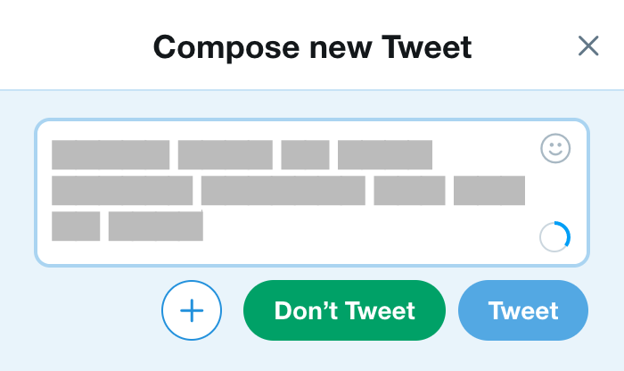

Is it worth saying?
On the Internet we often find ourselves staring at a box. We type our thoughts into this box and hit , and in an instant we see them reflected back at us. In many ways, this is the quintessential Internet activity—or, put another way, ing helps answer the the fundamental question of the Web.
But what about the times when we too quickly or without care? Or when it only feeds our feelings of disconnection or emptiness? Or when it distracts from more humane forms of communication? Have we overoptimized the Web for ?
What if we had an explicit option of ? Could it provide an escape hatch to avoid our bad habits? Or perhaps a simple visual reminder of choice would help us better?
Let’s find out.
Don’t Post is a browser extension for Chrome and Firefox that adds “Don’t Post” (or “Don’t Tweet” or “Don’t Reply”) buttons to Facebook, Twitter, and other sites. Like this:

Nothing. Well, something. Imagine you closed the tab and walked away from your computer. It’s like that.
Not a darn thing.
Nope. Sit this one out.
No, but there’s an easy workaround: Delete the app from your phone, then use the Web instead. Browse with intent.
Yup, that’s why I made this.